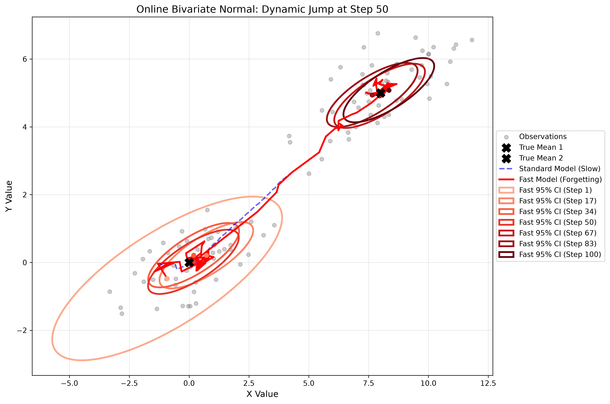

Bivariate Normal Models with Matrix Precision Discounting
In the real world, we rarely track just one variable in isolation. In self-driving cars, radar systems, and drone navigation, we must track objects in two-dimensional or three-dimensional space. To do this, we use the Bivariate (2D) Normal Distribution.
Instead of estimating a single mean \(\mu\), we estimate a mean vector \(\boldsymbol{\mu} = [\mu_x, \mu_y]^T\). Instead of a variance, we estimate a covariance matrix \(\Sigma\), which captures not just the uncertainty in \(X\) and \(Y\), but also how they correlate with each other.
We assume the data is drawn from a Bivariate Normal distribution with a known measurement noise covariance matrix \(\Sigma_{\text{data}}\).
Both the likelihood of a 2D data point \(\mathbf{x}\) and our prior belief about the 2D mean \(\boldsymbol{\mu}\) are Bivariate Normal distributions:
Just like in 1D, the math is vastly simplified by using the Precision Matrix, which is the inverse of the covariance matrix (\(\Lambda = \Sigma^{-1}\)).
When we observe a new point \(\mathbf{x}\), the matrix update rules are:
If a target is stationary, the standard model works perfectly. However, as the model observes more data, the determinant of the precision matrix grows infinitely large. The covariance matrix \(\Sigma\) shrinks to near-zero, and the 95% confidence ellipse becomes a microscopic dot.
If the target suddenly accelerates or teleports to a new location, the model will refuse to accept the new data because its "memory" of the old location is mathematically too rigid.
To track moving targets, we introduce a forgetting factor \(\lambda\) to artificially inflate our uncertainty before adding the new data. We do this by multiplying the prior precision matrix by \(\lambda\):
By setting \(\lambda = 0.85\), the model loses 15% of its certainty at every step. This causes the confidence ellipses to naturally expand over time, acting as a "search window" that allows the model to find the target's new location.
In the simulation below, a target stays at \((0,0)\) for 300 steps, then suddenly jumps to \((8,5)\).

import numpy as np
import matplotlib.pyplot as plt
from matplotlib.patches import Ellipse
from scipy.stats import chi2
import os
# Ensure the images directory exists
os.makedirs('images', exist_ok=True)
class OnlineBivariateNormalModel:
def __init__(self, mu_prior, cov_prior, known_cov, forgetting_factor=1.0):
self.mu = np.array(mu_prior, dtype=float)
self.cov = np.array(cov_prior, dtype=float)
self.known_cov = np.array(known_cov, dtype=float)
self.ff = forgetting_factor
def update(self, x):
prior_precision = np.linalg.inv(self.cov)
data_precision = np.linalg.inv(self.known_cov)
# Apply forgetting factor to prior precision
discounted_precision = prior_precision * self.ff
new_precision = discounted_precision + data_precision
self.cov = np.linalg.inv(new_precision)
self.mu = self.cov @ (discounted_precision @ self.mu + data_precision @ x)
def get_ellipse_params(self, confidence=0.95):
vals, vecs = np.linalg.eigh(self.cov)
order = vals.argsort()[::-1]
vals = vals[order]
vecs = vecs[:, order]
theta = np.degrees(np.arctan2(*vecs[:, 0][::-1]))
chi_val = chi2.ppf(confidence, df=2)
width, height = 2 * np.sqrt(vals * chi_val)
return width, height, theta
# 1. GENERATE DATA (Jump happens at step 300)
np.random.seed(42)
n_steps = 600
jump_step = n_steps // 2
true_mu_1 = np.array([0, 0])
true_mu_2 = np.array([8, 5])
known_cov = np.array([[4.0, 1.5], [1.5, 1.0]])
data_list = []
for i in range(n_steps):
if i < jump_step:
data_list.append(np.random.multivariate_normal(true_mu_1, known_cov))
else:
data_list.append(np.random.multivariate_normal(true_mu_2, known_cov))
# 2. INITIALIZE MODELS
mu_prior = [0, 0]
cov_prior = [[100, 0], [0, 100]]
std_model = OnlineBivariateNormalModel(mu_prior, cov_prior, known_cov, forgetting_factor=1.0)
fast_model = OnlineBivariateNormalModel(mu_prior, cov_prior, known_cov, forgetting_factor=0.90)
std_history, fast_history = [], []
snapshot_steps = list(np.linspace(1, n_steps, num=7, dtype=int))
snapshots = []
# 3. RUN SIMULATION
for i, x in enumerate(data_list):
std_model.update(x)
fast_model.update(x)
std_history.append(std_model.mu.copy())
fast_history.append(fast_model.mu.copy())
if (i + 1) in snapshot_steps:
w, h, angle = fast_model.get_ellipse_params()
snapshots.append({'step': i+1, 'mu': fast_model.mu.copy(), 'width': w, 'height': h, 'angle': angle})
# 4. PLOT
fig, ax = plt.subplots(figsize=(12, 8))
data_arr = np.array(data_list)
ax.scatter(data_arr[::5, 0], data_arr[::5, 1], color='gray', alpha=0.1, s=10, label='Observations')
ax.scatter(*true_mu_1, color='black', marker='X', s=150, zorder=5, label='True Mean 1')
ax.scatter(*true_mu_2, color='black', marker='X', s=150, zorder=5, label='True Mean 2')
std_history = np.array(std_history)
fast_history = np.array(fast_history)
ax.plot(std_history[:, 0], std_history[:, 1], 'b--', linewidth=2, alpha=0.5, label='Standard Model (Slow)')
ax.plot(fast_history[:, 0], fast_history[:, 1], 'r-', linewidth=2.5, label='Fast Model (Forgetting)')
colors = plt.cm.Reds(np.linspace(0.2, 1, len(snapshots)))
for snap, color in zip(snapshots, colors):
ellipse = Ellipse(xy=snap['mu'], width=snap['width'], height=snap['height'],
angle=snap['angle'], facecolor='none', edgecolor=color,
linewidth=2.5, label=f"Fast 95% CI (Step {snap['step']})")
ax.add_patch(ellipse)
ax.plot(snap['mu'][0], snap['mu'][1], 'o', color=color, markersize=6)
ax.set_title(f'Online Bivariate Normal: Dynamic Jump at Step {jump_step}', fontsize=14)
ax.set_xlabel('X Value')
ax.set_ylabel('Y Value')
ax.grid(True, alpha=0.3)
ax.legend(loc='center left', bbox_to_anchor=(1, 0.5))
plt.tight_layout()
# Save to the images folder
plt.savefig('images/bivariate_graph.png', dpi=300, bbox_inches='tight')
plt.show()